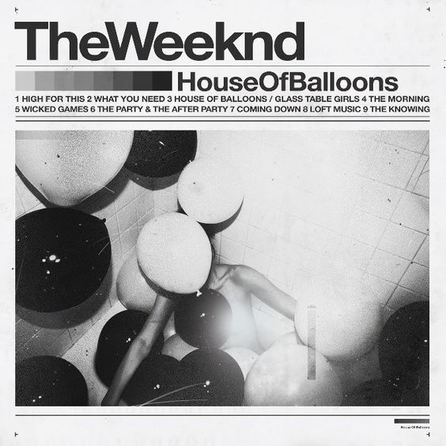
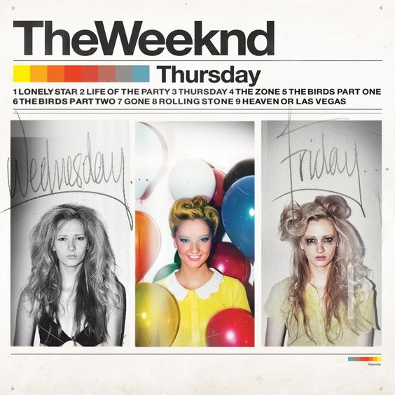
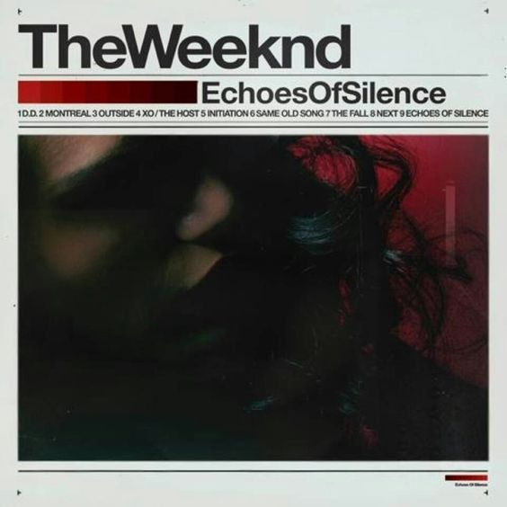
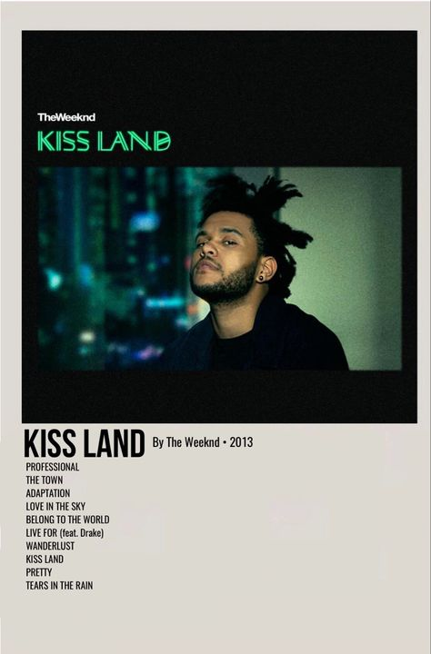
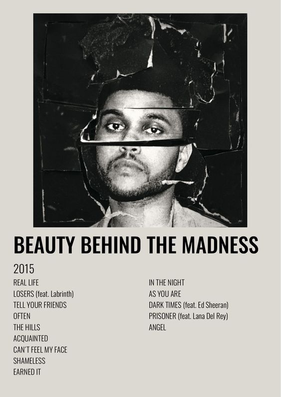
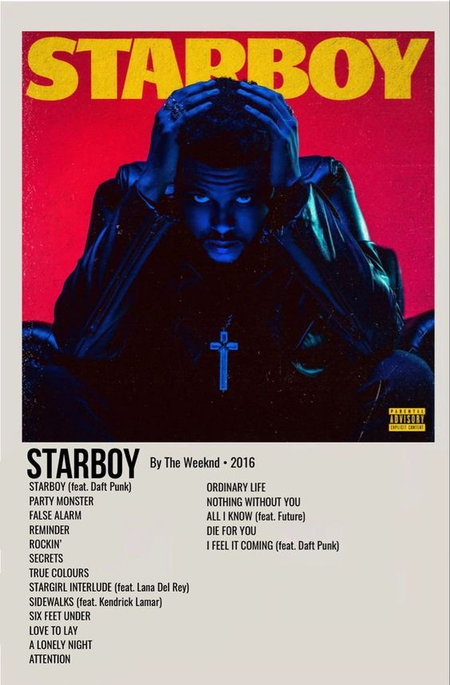
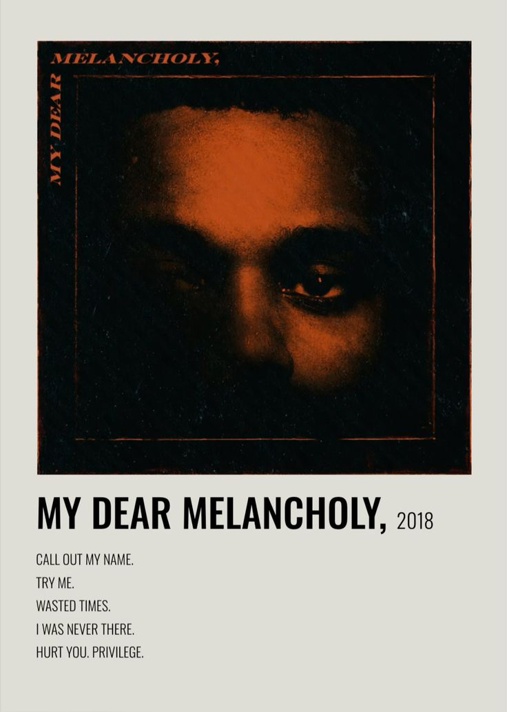
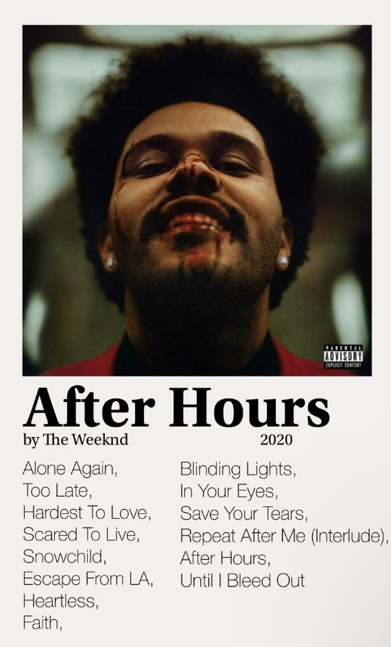
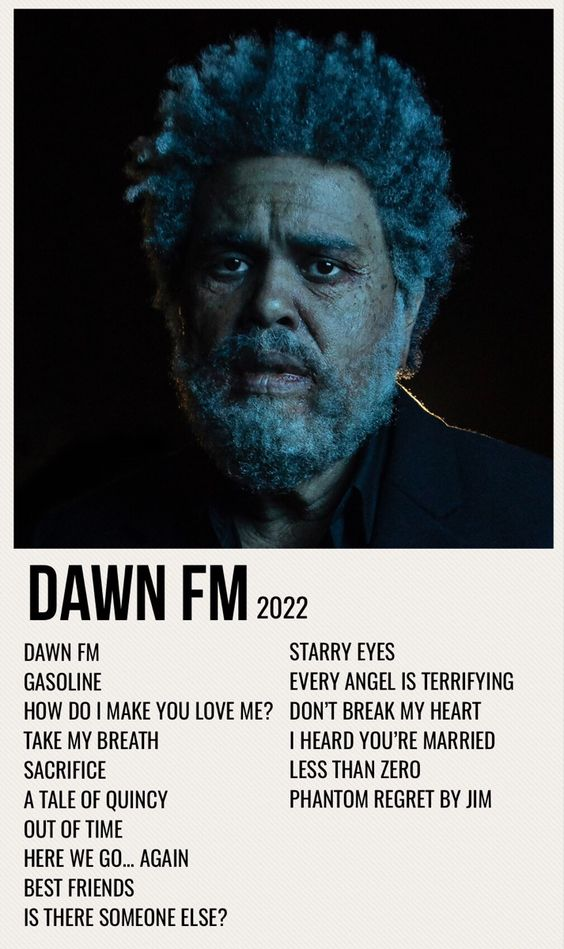

All of The Weeknd's mixtapes and albums in order:
- House of Balloons
- Thursday
- Echoes of Silence
- Kiss Land
- Beauty Behind the Madness
- Starboy
- My Dear Melancholy
- After Hours
- Dawn FM
House of Balloons
Release Date: March 21, 2011
House of Balloons Tracklist:
- High for This
- What You Need
- House of Balloons / Glass Table Girls
- The Morning
- Wicked Games
- The Party & the After Party
- Coming Down
- Loft Music
- The Knowing
Thursday
Release Date: August 18, 2011
Thursday Tracklist:
- Lonely Star
- Life of the Party
- Thursday
- The Zone (featuring Drake)
- The Birds Pt. 1
- The Birds Pt. 2
- Gone
- Rolling Stone
- Heaven or Las Vegas
Echoes of Silence
Release Date: December 21, 2011
Echoes of Silence Tracklist:
- D.D.
- Montreal
- Outside
- XO / The Host
- Initiation
- Same Old Song (featuring Juicy J)
- The Fall
- Next
- Echoes of Silence
Kiss Land
Release Date: September 10, 2013
Kiss Land Tracklist:
- Professional
- The Town
- Adaptation
- Love in the Sky
- Belong to the World
- Live For (featuring Drake)
- Wanderlust
- Kiss Land
- Pretty
- Tears in the Rain
Beauty Behind the Madness
Release Date: August 28, 2015
Beauty Behind the Madness Tracklist:
- Real Life
- Losers (featuring Labrinth)
- Tell Your Friends
- Often
- The Hills
- Acquainted
- Can't Feel My Face
- Shameless
- Earned It
- In the Night
- As You Are
- Dark Times (featuring Ed Sheeran)
- Prisoner (featuring Lana Del Rey)
- Angel
Starboy
Release Date: November 25, 2016
Starboy Tracklist:
- Starboy (featuring Daft Punk)
- Party Monster
- False Alarm
- Reminder
- Rockin'
- Secrets
- True Colors
- Stargirl Interlude (featuring Lana Del Rey)
- Sidewalks (featuring Kendrick Lamar)
- Six Feet Under
- Love to Lay
- A Lonely Night
- Attention
- Ordinary Life
- Nothing Without You
- All I Know (featuring Future)
- Die for You
- I Feel It Coming (featuring Daft Punk)
My Dear Melancholy
Release Date: March 30, 2018
My Dear Melancholy Tracklist:
- Call Out My Name
- Try Me
- Wasted Times
- I Was Never There (featuring Gesaffelstein)
- Hurt You (featuring Gesaffelstein)
- Privilege
After Hours
Release Date: March 20, 2020
After Hours Tracklist:
- Alone Again
- Too Late
- Hardest to Love
- Scared to Live
- Snowchild
- Escape from LA
- Heartless
- Faith
- Blinding Lights
- In Your Eyes
- Save Your Tears
- Repeat After Me (Interlude)
- After Hours
- Until I Bleed Out
Dawn FM
Release Date: January 7, 2022
Dawn FM Tracklist:
- Dawn FM
- Gasoline
- How Do I Make You Love Me?
- Take My Breath
- Sacrifice
- A Tale by Quincy
- Out of Time
- Here We Go… Again (featuring Tyler, the Creator)
- Best Friends
- Is There Someone Else?
- Starry Eyes
- Every Angel is Terrifying
- Don’t Break My Heart
- I Heard You’re Married (featuring Lil Wayne)
- Less than Zero
- Phantom Regret by Jim